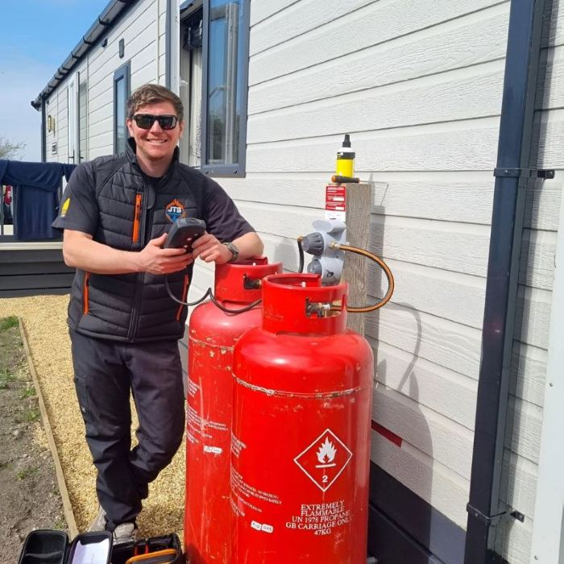

ABOUT JTS LPG SERVICES.
Specialist LPG gas services for static caravans, holiday homes, lodges, caravan parks and domestic LPG properties.
SPECIALIST LPG SERVICES FOR CARAVAN, LEISURE & DOMESTIC PROPERTIES.
JTS LPG Services was established to provide reliable, straightforward and professional LPG gas services for holiday-home owners, caravan parks and LPG customers.
The business specialises particularly in the caravan and leisure sector, where LPG systems, appliances and site requirements can differ significantly from standard mains-gas properties.
Our work ranges from annual gas safety inspections and appliance servicing to fault finding, boiler repairs and replacements, regulators, meters, new caravan connections and ongoing LPG maintenance for parks and multiple units.
LPG GAS SERVICES FOR CARAVANS, HOLIDAY HOMES & PARKS.
From annual compliance and preventative servicing to breakdowns and new installations, JTS LPG Services provides practical support throughout the life of an LPG system.
LPG Gas Safety Inspections & Certificates
Gas safety inspections for static caravans, holiday homes, lodges, rented accommodation and LPG properties.
LPG Boiler & Appliance Servicing
Annual servicing for boilers, water heaters, gas fires and cookers, including appliances commonly used in the caravan and leisure industry.
LPG Breakdowns, Fault Finding & Repairs
Diagnosis and repair of boiler faults, appliance problems, regulators, supply issues and other LPG faults.
Caravan Connections & Commissioning
LPG connection, testing, appliance commissioning and certification for newly sited caravans, holiday homes and lodges.

THE ENGINEER BEHIND JTS LPG SERVICES.
Jack set up JTS LPG Services after years of working with LPG, with particular experience across the caravan, holiday-home and leisure sectors.
Today, customers can deal directly with Jack from the first enquiry through to completing the work. That direct contact has helped the business build strong relationships with private owners, park operators and repeat customers.
Clear communication, reliable attendance and explaining work properly are an important part of how JTS LPG Services operates, alongside carrying out the gas work itself.
Read customer reviewsLPG QUALIFICATIONS YOU CAN VERIFY.
JTS LPG Services is registered for LPG gas work, with competencies covering the types of appliances and installations the business works on.
Current registration details and individual competencies can be checked directly through the official Gas Safe Register.
Verify on the Gas Safe RegisterRelevant categories cover LPG appliance, heating and cooking work.
MET1 supports appropriate gas meter installation, exchange and associated safety checks.
ANGLESEY & NORTH WALES.
Anglesey is the main service area for JTS LPG Services, with selected work also available in Bangor and other parts of North Wales depending on the type and size of the job.
Ask About Your LocationCOMMON QUESTIONS ABOUT OUR LPG WORK.
Useful information about the properties, customers and areas JTS LPG Services works with.
01 What does JTS LPG Services specialise in?
JTS LPG Services specialises in LPG gas work for static caravans, holiday homes, lodges and the caravan and leisure sector, alongside appropriate work in domestic LPG properties.
Services include gas safety inspections, annual appliance servicing, fault finding, repairs, boiler replacement, LPG supply equipment and new caravan connections.
02 Does JTS LPG Services work with caravan and holiday parks?
Yes. JTS LPG Services works with individual holiday-home owners as well as caravan parks, holiday parks and leisure businesses.
Multiple gas safety inspections, annual servicing, repairs, connections and ongoing LPG maintenance can be arranged for several units at the same site.
03 Do you only work on static caravans?
No. Static caravans are an important part of the business, but JTS LPG Services also works with holiday homes, lodges, caravan and holiday parks and domestic LPG properties.
04 Which areas does JTS LPG Services cover?
The main service area is Anglesey, including Holyhead, Valley, Trearddur Bay, Rhosneigr, Llangefni, Amlwch, Benllech, Menai Bridge and Beaumaris.
Selected work in Bangor and wider North Wales is available depending on the type and size of the job.
05 Can JTS LPG Services connect a newly sited caravan or lodge?
Yes. New caravan connection work can include LPG supply connection, testing, appliance commissioning and the appropriate Gas Safety Certificate.
Associated waste plumbing for newly sited caravans, holiday homes and lodges can also be included as part of the complete connection package.
NEED LPG WORK IN ANGLESEY OR NORTH WALES?
Gas safety inspections, annual servicing, breakdowns, boiler replacement, caravan connections and park LPG work.